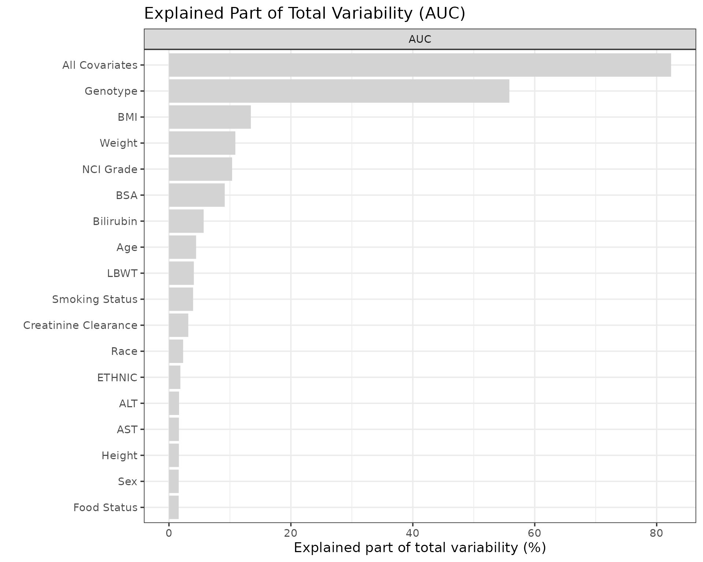
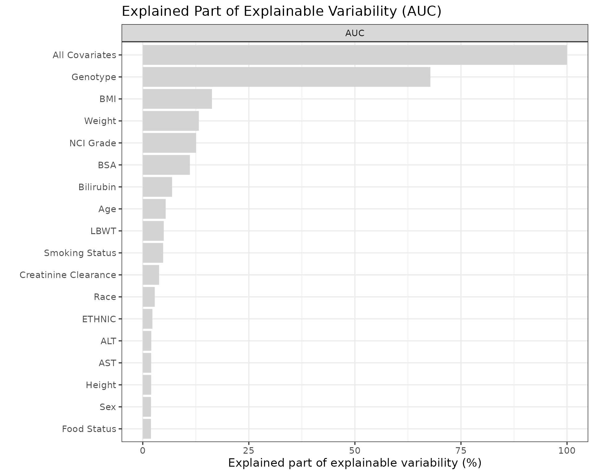

4. Deep Dive: Explained Variability
PMXFrem Development Team
3-deep-dive-explained-variability-plots.RmdIntroduction
This vignette explains how to use the PMXFrem package to visualize the degree to which covariates manage to explain variability in the parameters of interest.
The workflow is divided into five logical steps:
- Pre-requisite Setup: Loading models and datasets.
- Covariate Scenarios: Defining the specific covariate combinations to isolate.
- Parameter Function Definition: Writing the structural equations to evaluate.
- Computing Explained Variability: Deriving the variance metrics using specific integration methods.
- Visualization: Rendering the explained variability bar plots.
1. Setting up the Pre-requisite
Load the package and identify which NONMEM FREM run is going to be used.
library(PMXFrem)
library(ggplot2)
library(dplyr)
library(data.table)
# Enforce a clean global theme
set.seed(865765)
theme_set(theme_bw(base_size = 14))
# Specify the name of the FREM run and collect file paths
runname <- "run31"
modDevDir <- system.file("extdata/SimNeb", package = "PMXFrem")
fremFiles <- getFileNames(modName = runname, modDevDir = modDevDir)
numNonFREMThetas <- 7
numSkipOm <- 2
dfData <- fread(system.file("extdata/SimNeb/DAT-2-MI-PMX-2-onlyTYPE2-new.csv", package="PMXFrem"), data.table = FALSE) %>%
distinct(ID, .keep_all = TRUE)2. Defining the Covariate Scenarios
We use the package’s internal setupdfCovs() function to dynamically construct the covariate isolation matrix.
Important Conceptual Note: There is a fundamental difference in how the dfCovs matrix is utilized here compared to Forest plots. In a Forest plot, dfCovs dictates the exact numerical covariate values to visualize (e.g., WT = 115). For explained variability, dfCovs acts purely as an indicator matrix for the FREM covariates. For these covariates, the actual numerical value assigned does not impact the calculation; setting it to anything other than the missing covariate indicator (typically -99) simply flags which covariates should be actively evaluated for that specific scenario row.
However, this indicator system only applies to FREM covariates. For FFEM covariates (covariates outside the FREM matrix, such as FOOD), the parameter function will still evaluate the actual numerical value provided in dfCovs.
Because FOOD is a time-varying categorical FFEM covariate that our parameter function evaluates manually, we append it as an additionalCov and set its state to 1 (Fed) so our function logic executes correctly.
# Robustly generate the covariate matrix
dfCovs <- setupdfCovs(
modFileName = fremFiles$mod,
additionalCovs = c("FOOD")
)
# Lock the time-varying FFEM covariate state
dfCovs$FOOD <- 1
# Define the exact names corresponding to the rows in dfCovs
cstrCovariates <- c("All", names(dfCovs))3. Defining the Parameter Function
We must supply a function that mimics the structural relationships in the FFEM model. This function is conceptually identical to the one used for Forest plots, with one essential difference: it must include the etas[] argument to allow the package to integrate over the structural variance.
Handling Missing Covariates: You must build defensive fallback logic for missing covariates (e.g., dfrow$FOOD != -99) only for covariates outside the FREM part of the model (FFEM covariates). PMXFrem automatically handles missing data for the covariates included in the FREM covariance matrix. However, because the dfCovs matrix intentionally assigns -99 to isolate covariate effects, your function will encounter missing data for FFEM covariates like FOOD and must know how to revert to the baseline fixed effect.
paramFunctionExpVar <- function(basethetas, covthetas, dfrow, etas, ...) {
# Defensive fallback logic for isolating FFEM covariate effects
FRELFOOD <- 1
if (any(names(dfrow) == "FOOD") && dfrow$FOOD != -99 && dfrow$FOOD == 0) {
FRELFOOD <- (1 + basethetas[7])
}
MATFOOD <- 1
if (any(names(dfrow) == "FOOD") && dfrow$FOOD != -99 && dfrow$FOOD == 0) {
MATFOOD <- (1 + basethetas[6])
}
TVFREL <- basethetas[1]
TVCL <- basethetas[2]
TVV <- basethetas[3]
TVMAT <- basethetas[4]
TVD1 <- basethetas[5]
MU_2 <- TVD1
MU_3 <- log(TVFREL)
MU_4 <- log(TVCL)
MU_5 <- log(TVV)
MU_6 <- log(TVMAT)
D1FR <- MU_2 + etas[2]
FREL <- FRELFOOD * exp(MU_3)
CL <- exp(MU_4 + covthetas[1] + etas[3])
V <- exp(MU_5 + covthetas[2] + etas[4])
MAT <- MATFOOD * exp(MU_6 + covthetas[3] + etas[5])
D1 <- MAT * (1 - TVD1)
KA <- 1 / (MAT - D1)
# Compute AUC after an 80 mg dose
AUC <- 80 / (CL / FREL)
return(list(CL, FREL, AUC, V, MAT))
}
functionListName <- c("CL", "Frel", "AUC", "V", "MAT")4. Computing Explained Variability
The getExplainedVar() function computes the total and explained variability. The variability can be related to the total variability in the parameter (\(TOTVAR\)) or the total covariate variability in the parameter (\(TOTCOVVAR\)).
The dfres output contains three main metrics:
- \(TOTVAR\): The total variance, calculated using the Delta method (Type 0), EBEs (Type 1), or \(\eta\) samples (Type 2, 3).
- \(TOTCOVVAR\): Calculated using all covariates with \(\eta=0\), across all observed covariate values.
- \(COVVAR\): Calculated with one (or a combination) of covariates, setting \(\eta=0\).
Calculation Methods (type)
The methodology is dictated by the type argument, and each has distinct mathematical properties:
- Type 0 (Delta Method): Based on omega calculations. It is fast and guarantees that the explained variability of all covariates will sum to exactly 100%.
- Type 1 (EBEs): Uses Empirical Bayes Estimates. It is subject to \(\eta\) shrinkage but acknowledges individual information richness.
- Type 2 (\(\eta\) Samples): Uses \(\eta\) samples and integrates over observed FFEM covariates. Useful if the model contains non-FREM covariates.
- Type 3 (\(\eta\) Samples Optimized): Similar to Type 2 but does not acknowledge FFEM covariates, making it significantly faster.
Note: With Types 1, 2, and 3, it is theoretically possible for a single covariate to explain more than all covariates combined (i.e., > 100%) due to parameter correlations and structural non-linearities.
dfres <- getExplainedVar(
type = 2,
data = dfData,
dfCovs = dfCovs,
numNonFREMThetas = numNonFREMThetas,
numSkipOm = numSkipOm,
functionList = list(paramFunctionExpVar),
functionListName = functionListName,
cstrCovariates = cstrCovariates,
modDevDir = modDevDir,
modName = runname,
ncores = 1,
numETASamples = 100,
quiet = TRUE,
seed = 123
)5. Visualization
We plot the results using plotExplainedVar(). To ensure reproducibility and prevent silent misalignment, we map our labels using a programmatic dictionary.
# 1. Define robust label mappings
label_map <- c(
"All" = "All Covariates", "AGE" = "Age", "ALT" = "ALT", "AST" = "AST",
"BILI" = "Bilirubin", "BMI" = "BMI", "BSA" = "BSA", "CRCL" = "Creatinine Clearance",
"ETHN" = "Ethnicity", "GENO2" = "Genotype", "HT" = "Height", "LBM" = "Lean Body Mass",
"NCIL" = "NCI Grade", "RACEL" = "Race", "SEX" = "Sex", "SMOK" = "Smoking Status",
"WT" = "Weight", "FOOD" = "Food Status"
)
# 2. Safely translate cstrCovariates into clean labels
mapped_labels <- unname(sapply(cstrCovariates, function(x) {
ifelse(x %in% names(label_map), label_map[[x]], x)
}))
# 3. Plot Total Explained Variability (maxVar = 1)
# Visualizes the fraction: 100 * (COVVAR / TOTVAR)
plotExplainedVar(
dfres,
parameters = "AUC",
maxVar = 1,
covariateLabels = mapped_labels
) + labs(title = "Explained Part of Total Variability (AUC)")
# 4. Plot Proportion of Explainable Variability (maxVar = 2)
# Visualizes the fraction: 100 * (COVVAR / TOTCOVVAR)
plotExplainedVar(
dfres,
parameters = "AUC",
maxVar = 2,
covariateLabels = mapped_labels
) + labs(title = "Explained Part of Explainable Variability (AUC)")